The prior chapter discussed processes, the operating system abstraction of active program code. This chapter discusses the process scheduler, the kernel subsystem that puts those processes to work.
The process scheduler decides which process runs, when, and for how long. The process scheduler (or simply the scheduler, to which it is often shortened) divides the finite resource of processor time between the runnable processes on a system. The scheduler is the basis of a multitasking operating system such as Linux. By deciding which process runs next, the scheduler is responsible for best utilizing the system and giving users the impression that multiple processes are executing simultaneously.
The idea behind the scheduler is simple. To best utilize processor time, assuming there are runnable processes, a process should always be running. If there are more runnable processes than processors in a system, some processes will not be running at a given moment. These processes are waiting to run. Deciding which process runs next, given a set of runnable processes, is the fundamental decision that the scheduler must make.
A multitasking operating system is one that can simultaneously interleave execution of more than one process. On single processor machines, this gives the illusion of multiple processes running concurrently. On multiprocessor machines, such functionality enables processes to actually run concurrently, in parallel, on different processors. On either type of machine, it also enables many processes to block or sleep, not actually executing until work is available. These processes, although in memory, are not runnable. Instead, such processes utilize the kernel to wait until some event (keyboard input, network data, passage of time, and so on) occurs. Consequently, a modern Linux system can have many processes in memory but, say, only one in a runnable state.
Multitasking operating systems come in two flavors: cooperative multitasking and preemptive multitasking. Linux, like all Unix variants and most modern operating systems, implements preemptive multitasking. In preemptive multitasking, the scheduler decides when a process is to cease running and a new process is to begin running. The act of involuntarily suspending a running process is called preemption. The time a process runs before it is preempted is usually predetermined, and it is called the timeslice of the process. The timeslice, in effect, gives each runnable process a slice of the processor’s time. Managing the timeslice enables the scheduler to make global scheduling decisions for the system. It also prevents any one process from monopolizing the processor. On many modern operating systems, the timeslice is dynamically calculated as a function of process behavior and configurable system policy. As we shall see, Linux’s unique “fair” scheduler does not employ timeslices per se, to interesting effect.
Conversely, in cooperative multitasking, a process does not stop running until it voluntary decides to do so. The act of a process voluntarily suspending itself is called yielding. Ideally, processes yield often, giving each runnable process a decent chunk of the processor, but the operating system cannot enforce this. The shortcomings of this approach are manifest: The scheduler cannot make global decisions regarding how long processes run; processes can monopolize the processor for longer than the user desires; and a hung process that never yields can potentially bring down the entire system. Thankfully, most operating systems designed in the last two decades employ preemptive multitasking, with Mac OS 9 (and earlier) and Windows 3.1 (and earlier) being the most notable (and embarrassing) exceptions. Of course, Unix has sported preemptive multitasking since its inception.
From Linux’s first version in 1991 through the 2.4 kernel series, the Linux scheduler was simple, almost pedestrian, in design. It was easy to understand, but scaled poorly in light of many runnable processes or many processors.
In response, during the 2.5 kernel development series, the Linux kernel received a scheduler overhaul. A new scheduler, commonly called the O(1) scheduler because of its algorithmic behavior,1 solved the shortcomings of the previous Linux scheduler and introduced powerful new features and performance characteristics. By introducing a constant-time algorithm for timeslice calculation and per-processor runqueues, it rectified the design limitations of the earlier scheduler.
1
O(1) is an example of big-o notation. In short, it means the scheduler can perform its work in constant time, regardless of the size of any inputs. A full explanation of big-o notation is in Chapter 6, “Kernel Data Structures.”
The O(1) scheduler performed admirably and scaled effortlessly as Linux supported large “iron” with tens if not hundreds of processors. Over time, however, it became evident that the O(1) scheduler had several pathological failures related to scheduling latency-sensitive applications. These applications, called interactive processes, include any application with which the user interacts. Thus, although the O(1) scheduler was ideal for large server workloads—which lack interactive processes—it performed below par on desktop systems, where interactive applications are the raison d’être. Beginning early in the 2.6 kernel series, developers introduced new process schedulers aimed at improving the interactive performance of the O(1) scheduler. The most notable of these was the Rotating Staircase Deadline scheduler, which introduced the concept of fair scheduling, borrowed from queuing theory, to Linux’s process scheduler. This concept was the inspiration for the O(1) scheduler’s eventual replacement in kernel version 2.6.23, the Completely Fair Scheduler, or CFS.
This chapter discusses the fundamentals of scheduler design and how they apply to the Completely Fair Scheduler and its goals, design, implementation, algorithms, and related system calls. We also discuss the O(1) scheduler because its implementation is a more “classic” Unix process scheduler model.
Policy is the behavior of the scheduler that determines what runs when. A scheduler’s policy often determines the overall feel of a system and is responsible for optimally utilizing processor time. Therefore, it is very important.
Processes can be classified as either I/O-bound or processor-bound. The former is characterized as a process that spends much of its time submitting and waiting on I/O requests. Consequently, such a process is runnable for only short durations, because it eventually blocks waiting on more I/O. (Here, by I/O, we mean any type of blockable resource, such as keyboard input or network I/O, and not just disk I/O.) Most graphical user interface (GUI) applications, for example, are I/O-bound, even if they never read from or write to the disk, because they spend most of their time waiting on user interaction via the keyboard and mouse.
Conversely, processor-bound processes spend much of their time executing code. They tend to run until they are preempted because they do not block on I/O requests very often. Because they are not I/O-driven, however, system response does not dictate that the scheduler run them often. A scheduler policy for processor-bound processes, therefore, tends to run such processes less frequently but for longer durations. The ultimate example of a processor-bound process is one executing an infinite loop. More palatable examples include programs that perform a lot of mathematical calculations, such as ssh-keygen or MATLAB.
Of course, these classifications are not mutually exclusive. Processes can exhibit both behaviors simultaneously: The X Window server, for example, is both processor and I/O-intense. Other processes can be I/O-bound but dive into periods of intense processor action. A good example of this is a word processor, which normally sits waiting for key presses but at any moment might peg the processor in a rabid fit of spell checking or macro calculation.
The scheduling policy in a system must attempt to satisfy two conflicting goals: fast process response time (low latency) and maximal system utilization (high throughput). To satisfy these at-odds requirements, schedulers often employ complex algorithms to determine the most worthwhile process to run while not compromising fairness to other, lower priority, processes. The scheduler policy in Unix systems tends to explicitly favor I/O-bound processes, thus providing good process response time. Linux, aiming to provide good interactive response and desktop performance, optimizes for process response (low latency), thus favoring I/O-bound processes over processor-bound processors. As we will see, this is done in a creative manner that does not neglect processor-bound processes.
A common type of scheduling algorithm is priority-based scheduling. The goal is to rank processes based on their worth and need for processor time. The general idea, which isn’t exactly implemented on Linux, is that processes with a higher priority run before those with a lower priority, whereas processes with the same priority are scheduled round-robin (one after the next, repeating). On some systems, processes with a higher priority also receive a longer timeslice. The runnable process with timeslice remaining and the highest priority always runs. Both the user and the system can set a process’s priority to influence the scheduling behavior of the system.
The Linux kernel implements two separate priority ranges. The first is the nice value, a number from –20 to +19 with a default of 0. Larger nice values correspond to a lower priority—you are being “nice” to the other processes on the system. Processes with a lower nice value (higher priority) receive a larger proportion of the system’s processor compared to processes with a higher nice value (lower priority). Nice values are the standard priority range used in all Unix systems, although different Unix systems apply them in different ways, reflective of their individual scheduling algorithms. In other Unix-based systems, such as Mac OS X, the nice value is a control over the absolute timeslice allotted to a process; in Linux, it is a control over the proportion of timeslice. You can see a list of the processes on your system and their respective nice values (under the column marked NI) with the command ps -el.
The second range is the real-time priority. The values are configurable, but by default range from 0 to 99, inclusive. Opposite from nice values, higher real-time priority values correspond to a greater priority. All real-time processes are at a higher priority than normal processes; that is, the real-time priority and nice value are in disjoint value spaces. Linux implements real-time priorities in accordance with the relevant Unix standards, specifically POSIX.1b. All modern Unix systems implement a similar scheme. You can see a list of the processes on your system and their respective real-time priority (under the column marked RTPRIO) with the command
ps -eo state,uid,pid,ppid,rtprio,time,comm.
A value of “-” means the process is not real-time.
The timeslice2 is the numeric value that represents how long a task can run until it is preempted. The scheduler policy must dictate a default timeslice, which is not a trivial exercise. Too long a timeslice causes the system to have poor interactive performance; the system will no longer feel as if applications are concurrently executed. Too short a timeslice causes significant amounts of processor time to be wasted on the overhead of switching processes because a significant percentage of the system’s time is spent switching from one process with a short timeslice to the next. Furthermore, the conflicting goals of I/O-bound versus processor-bound processes again arise: I/O-bound processes do not need longer timeslices (although they do like to run often), whereas processor-bound processes crave long timeslices (to keep their caches hot).
2 Timeslice is sometimes called quantum or processor slice in other systems. Linux calls it timeslice, thus so should you.
With this argument, it would seem that any long timeslice would result in poor interactive performance. In many operating systems, this observation is taken to heart, and the default timeslice is rather low—for example, 10 milliseconds. Linux’s CFS scheduler, however, does not directly assign timeslices to processes. Instead, in a novel approach, CFS assigns processes a proportion of the processor. On Linux, therefore, the amount of processor time that a process receives is a function of the load of the system. This assigned proportion is further affected by each process’s nice value. The nice value acts as a weight, changing the proportion of the processor time each process receives. Processes with higher nice values (a lower priority) receive a deflationary weight, yielding them a smaller proportion of the processor; processes with smaller nice values (a higher priority) receive an inflationary weight, netting them a larger proportion of the processor.
As mentioned, the Linux operating system is preemptive. When a process enters the runnable state, it becomes eligible to run. In most operating systems, whether the process runs immediately, preempting the currently running process, is a function of the process’s priority and available timeslice. In Linux, under the new CFS scheduler, the decision is a function of how much of a proportion of the processor the newly runnable processor has consumed. If it has consumed a smaller proportion of the processor than the currently executing process, it runs immediately, preempting the current process. If not, it is scheduled to run at a later time.
Consider a system with two runnable tasks: a text editor and a video encoder. The text editor is I/O-bound because it spends nearly all its time waiting for user key presses. (No matter how fast the user types, it is not that fast.) Despite this, when the text editor does receive a key press, the user expects the editor to respond immediately. Conversely, the video encoder is processor-bound. Aside from reading the raw data stream from the disk and later writing the resulting video, the encoder spends all its time applying the video codec to the raw data, easily consuming 100% of the processor. The video encoder does not have any strong time constraints on when it runs—if it started running now or in half a second, the user could not tell and would not care. Of course, the sooner it finishes the better, but latency is not a primary concern.
In this scenario, ideally the scheduler gives the text editor a larger proportion of the available processor than the video encoder, because the text editor is interactive. We have two goals for the text editor. First, we want it to have a large amount of processor time available to it; not because it needs a lot of processor (it does not) but because we want it to always have processor time available the moment it needs it. Second, we want the text editor to preempt the video encoder the moment it wakes up (say, when the user presses a key). This can ensure the text editor has good interactive performance and is responsive to user input. On most operating systems, these goals are accomplished (if at all) by giving the text editor a higher priority and larger timeslice than the video encoder. Advanced operating systems do this automatically, by detecting that the text editor is interactive. Linux achieves these goals too, but by different means. Instead of assigning the text editor a specific priority and timeslice, it guarantees the text editor a specific proportion of the processor. If the video encoder and text editor are the only running processes and both are at the same nice level, this proportion would be 50%—each would be guaranteed half of the processor’s time. Because the text editor spends most of its time blocked, waiting for user key presses, it does not use anywhere near 50% of the processor. Conversely, the video encoder is free to use more than its allotted 50%, enabling it to finish the encoding quickly.
The crucial concept is what happens when the text editor wakes up. Our primary goal is to ensure it runs immediately upon user input. In this case, when the editor wakes up, CFS notes that it is allotted 50% of the processor but has used considerably less. Specifically, CFS determines that the text editor has run for less time than the video encoder. Attempting to give all processes a fair share of the processor, it then preempts the video encoder and enables the text editor to run. The text editor runs, quickly processes the user’s key press, and again sleeps, waiting for more input. As the text editor has not consumed its allotted 50%, we continue in this manner, with CFS always enabling the text editor to run when it wants and the video encoder to run the rest of the time.
In the previous sections, we discussed process scheduling in the abstract, with only occasional mention of how Linux applies a given concept to reality. With the foundation of scheduling now built, we can dive into Linux’s process scheduler.
The Linux scheduler is modular, enabling different algorithms to schedule different types of processes. This modularity is called scheduler classes. Scheduler classes enable different, pluggable algorithms to coexist, scheduling their own types of processes. Each scheduler class has a priority. The base scheduler code, which is defined in kernel/sched.c, iterates over each scheduler class in order of priority. The highest priority scheduler class that has a runnable process wins, selecting who runs next.
The Completely Fair Scheduler (CFS) is the registered scheduler class for normal processes, called SCHED_NORMAL in Linux (and SCHED_OTHER in POSIX). CFS is defined in kernel/sched_fair.c. The rest of this section discusses the CFS algorithm and is germane to any Linux kernel since 2.6.23. We discuss the scheduler class for real-time processes in a later section.
To discuss fair scheduling, we must first describe how traditional Unix systems schedule processes. As mentioned in the previous section, modern process schedulers have two common concepts: process priority and timeslice. Timeslice is how long a process runs; processes start with some default timeslice. Processes with a higher priority run more frequently and (on many systems) receive a higher timeslice. On Unix, the priority is exported to user-space in the form of nice values. This sounds simple, but in practice it leads to several pathological problems, which we now discuss.
First, mapping nice values onto timeslices requires a decision about what absolute timeslice to allot each nice value. This leads to suboptimal switching behavior. For example, let’s assume we assign processes of the default nice value (zero) a timeslice of 100 milliseconds and processes at the highest nice value (+20, the lowest priority) a timeslice of 5 milliseconds. Further, let’s assume one of each of these processes is runnable. Our default-priority process thus receives 20/21 (100 out of 105 milliseconds) of the processor, whereas our low priority process receives 1/21 (5 out of 105 milliseconds) of the processor. We could have used any numbers for this example, but we assume this allotment is optimal since we chose it. Now, what happens if we run exactly two low priority processes? We’d expect they each receive 50% of the processor, which they do. But they each enjoy the processor for only 5 milliseconds at a time (5 out of 10 milliseconds each)! That is, instead of context switching twice every 105 milliseconds, we now context switch twice every 10 milliseconds. Conversely, if we have two normal priority processes, each again receives the correct 50% of the processor, but in 100 millisecond increments. Neither of these timeslice allotments are necessarily ideal; each is simply a byproduct of a given nice value to timeslice mapping coupled with a specific runnable process priority mix. Indeed, given that high nice value (low priority) processes tend to be background, processor-intensive tasks, while normal priority processes tend to be foreground user tasks, this timeslice allotment is exactly backward from ideal!
A second problem concerns relative nice values and again the nice value to timeslice mapping. Say we have two processes, each a single nice value apart. First, let’s assume they are at nice values 0 and 1. This might map (and indeed did in the O(1) scheduler) to timeslices of 100 and 95 milliseconds, respectively. These two values are nearly identical, and thus the difference here between a single nice value is small. Now, instead, let’s assume our two processes are at nice values of 18 and 19. This now maps to timeslices of 10 and 5 milliseconds, respectively—the former receiving twice the processor time as the latter! Because nice values are most commonly used in relative terms (as the system call accepts an increment, not an absolute value), this behavior means that “nicing down a process by one” has wildly different effects depending on the starting nice value.
Third, if performing a nice value to timeslice mapping, we need the ability to assign an absolute timeslice. This absolute value must be measured in terms the kernel can measure. In most operating systems, this means the timeslice must be some integer multiple of the timer tick. (See Chapter 11, “Timers and Time Management,” for a discussion on time.) This introduces several problems. First, the minimum timeslice has a floor of the period of the timer tick, which might be as high as 10 milliseconds or as low as 1 millisecond. Second, the system timer limits the difference between two timeslices; successive nice values might map to timeslices as much as 10 milliseconds or as little as 1 millisecond apart. Finally, timeslices change with different timer ticks. (If this paragraph’s discussion of timer ticks is foreign, reread it after reading Chapter 11. This is only one motivation behind CFS.)
The fourth and final problem concerns handling process wake up in a priority-based scheduler that wants to optimize for interactive tasks. In such a system, you might want to give freshly woken-up tasks a priority boost by allowing them to run immediately, even if their timeslice was expired. Although this improves interactive performance in many, if not most, situations, it also opens the door to pathological cases where certain sleep/wake up use cases can game the scheduler into providing one process an unfair amount of processor time, at the expense of the rest of the system.
Most of these problems are solvable by making substantial but not paradigm-shifting changes to the old-school Unix scheduler. For example, making nice values geometric instead of additive solves the second problem. And mapping nice values to timeslices using a measurement decoupled from the timer tick solves the third problem. But such solutions belie the true problem, which is that assigning absolute timeslices yields a constant switching rate but variable fairness. The approach taken by CFS is a radical (for process schedulers) rethinking of timeslice allotment: Do away with timeslices completely and assign each process a proportion of the processor. CFS thus yields constant fairness but a variable switching rate.
CFS is based on a simple concept: Model process scheduling as if the system had an ideal, perfectly multitasking processor. In such a system, each process would receive 1/n of the processor’s time, where n is the number of runnable processes, and we’d schedule them for infinitely small durations, so that in any measurable period we’d have run all n processes for the same amount of time. As an example, assume we have two processes. In the standard Unix model, we might run one process for 5 milliseconds and then another process for 5 milliseconds. While running, each process would receive 100% of the processor. In an ideal, perfectly multitasking processor, we would run both processes simultaneously for 10 milliseconds, each at 50% power. This latter model is called perfect multitasking.
Of course, such a model is also impractical, because it is not possible on a single processor to literally run multiple processes simultaneously. Moreover, it is not efficient to run processes for infinitely small durations. That is, there is a switching cost to preempting one process for another: the overhead of swapping one process for another and the effects on caches, for example. Thus, although we’d like to run processes for very small durations, CFS is mindful of the overhead and performance hit in doing so. Instead, CFS will run each process for some amount of time, round-robin, selecting next the process that has run the least. Rather than assign each process a timeslice, CFS calculates how long a process should run as a function of the total number of runnable processes. Instead of using the nice value to calculate a timeslice, CFS uses the nice value to weight the proportion of processor a process is to receive: Higher valued (lower priority) processes receive a fractional weight relative to the default nice value, whereas lower valued (higher priority) processes receive a larger weight.
Each process then runs for a “timeslice” proportional to its weight divided by the total weight of all runnable threads. To calculate the actual timeslice, CFS sets a target for its approximation of the “infinitely small” scheduling duration in perfect multitasking. This target is called the targeted latency. Smaller targets yield better interactivity and a closer approximation to perfect multitasking, at the expense of higher switching costs and thus worse overall throughput. Let’s assume the targeted latency is 20 milliseconds and we have two runnable tasks at the same priority. Regardless of those task’s priority, each will run for 10 milliseconds before preempting in favor of the other. If we have four tasks at the same priority, each will run for 5 milliseconds. If there are 20 tasks, each will run for 1 millisecond.
Note as the number of runnable tasks approaches infinity, the proportion of allotted processor and the assigned timeslice approaches zero. As this will eventually result in unacceptable switching costs, CFS imposes a floor on the timeslice assigned to each process. This floor is called the minimum granularity. By default it is 1 millisecond. Thus, even as the number of runnable processes approaches infinity, each will run for at least 1 millisecond, to ensure there is a ceiling on the incurred switching costs. (Astute readers will note that CFS is thus not perfectly fair when the number of processes grows so large that the calculated proportion is floored by the minimum granularity. This is true. Although modifications to fair queuing exist to improve upon this fairness, CFS was explicitly designed to make this trade-off. In the common case of only a handful of runnable processes, CFS is perfectly fair.)
Now, let’s again consider the case of two runnable processes, except with dissimilar nice values—say, one with the default nice value (zero) and one with a nice value of 5. These nice values have dissimilar weights and thus our two processes receive different proportions of the processor’s time. In this case, the weights work out to about a 1/3 penalty for the nice-5 process. If our target latency is again 20 milliseconds, our two processes will receive 15 milliseconds and 5 milliseconds each of processor time, respectively. Say our two runnable processes instead had nice values of 10 and 15. What would be the allotted timeslices? Again 15 and 5 milliseconds each! Absolute nice values no longer affect scheduling decisions; only relative values affect the proportion of processor time allotted.
Put generally, the proportion of processor time that any process receives is determined only by the relative difference in niceness between it and the other runnable processes. The nice values, instead of yielding additive increases to timeslices, yield geometric differences. The absolute timeslice allotted any nice value is not an absolute number, but a given proportion of the processor. CFS is called a fair scheduler because it gives each process a fair share—a proportion—of the processor’s time. As mentioned, note that CFS isn’t perfectly fair, because it only approximates perfect multitasking, but it can place a lower bound on latency of n for n runnable processes on the unfairness.
With the discussion of the motivation for and logic of CFS behind us, we can now explore CFS’s actual implementation, which lives in kernel/sched_fair.c. Specifically, we discuss four components of CFS:
All process schedulers must account for the time that a process runs. Most Unix systems do so, as discussed earlier, by assigning each process a timeslice. On each tick of the system clock, the timeslice is decremented by the tick period. When the timeslice reaches zero, the process is preempted in favor of another runnable process with a nonzero timeslice.
CFS does not have the notion of a timeslice, but it must still keep account for the time that each process runs, because it needs to ensure that each process runs only for its fair share of the processor. CFS uses the scheduler entity structure, struct sched_entity, defined in <linux/sched.h>, to keep track of process accounting:
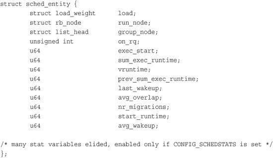
The scheduler entity structure is embedded in the process descriptor, struct task_stuct, as a member variable named se. We discussed the process descriptor in Chapter 3, “Process Management.”
The vruntime variable stores the virtual runtime of a process, which is the actual runtime (the amount of time spent running) normalized (or weighted) by the number of runnable processes. The virtual runtime’s units are nanoseconds and therefore vruntime is decoupled from the timer tick. The virtual runtime is used to help us approximate the “ideal multitasking processor” that CFS is modeling. With such an ideal processor, we wouldn’t need vruntime, because all runnable processes would perfectly multitask. That is, on an ideal processor, the virtual runtime of all processes of the same priority would be identical—all tasks would have received an equal, fair share of the processor. Because processors are not capable of perfect multitasking and we must run each process in succession, CFS uses vruntime to account for how long a process has run and thus how much longer it ought to run.
The function update_curr(), defined in kernel/sched_fair.c, manages this accounting:
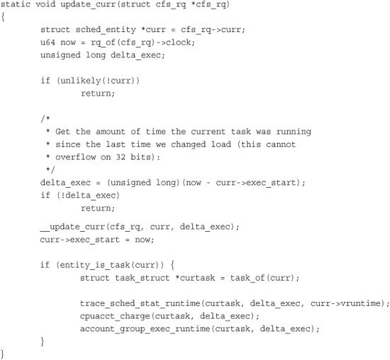
update_curr() calculates the execution time of the current process and stores that value in delta_exec. It then passes that runtime to __update_curr(), which weights the time by the number of runnable processes. The current process’s vruntime is then incremented by the weighted value:
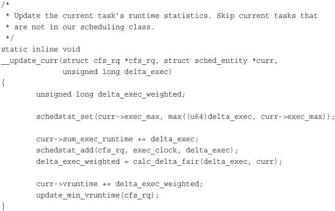
update_curr() is invoked periodically by the system timer and also whenever a process becomes runnable or blocks, becoming unrunnable. In this manner, vruntime is an accurate measure of the runtime of a given process and an indicator of what process should run next.
In the last section, we discussed how vruntime on an ideal, perfectly multitasking processor would be identical among all runnable processes. In reality, we cannot perfectly multitask, so CFS attempts to balance a process’s virtual runtime with a simple rule: When CFS is deciding what process to run next, it picks the process with the smallest vruntime. This is, in fact, the core of CFS’s scheduling algorithm: Pick the task with the smallest vruntime. That’s it! The rest of this subsection describes how the selection of the process with the smallest vruntime is implemented.
CFS uses a red-black tree to manage the list of runnable processes and efficiently find the process with the smallest vruntime. A red-black tree, called an rbtree in Linux, is a type of self-balancing binary search tree. We discuss self-balancing binary search trees in general and red-black trees in particular in Chapter 6. For now, if you are unfamiliar, you need to know only that red-black trees are a data structure that store nodes of arbitrary data, identified by a specific key, and that they enable efficient search for a given key. (Specifically, obtaining a node identified by a given key is logarithmic in time as a function of total nodes in the tree.)
Let’s start with the assumption that we have a red-black tree populated with every runnable process in the system where the key for each node is the runnable process’s virtual runtime. We’ll look at how we build that tree in a moment, but for now let’s assume we have it. Given this tree, the process that CFS wants to run next, which is the process with the smallest vruntime, is the leftmost node in the tree. That is, if you follow the tree from the root down through the left child, and continue moving to the left until you reach a leaf node, you find the process with the smallest vruntime. (Again, if you are unfamiliar with binary search trees, don’t worry. Just know that this process is efficient.) CFS’s process selection algorithm is thus summed up as “run the process represented by the leftmost node in the rbtree.” The function that performs this selection is __pick_next_entity(), defined in kernel/sched_fair.c:
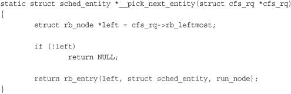
Note that __pick_next_entity() does not actually traverse the tree to find the leftmost node, because the value is cached by rb_leftmost. Although it is efficient to walk the tree to find the leftmost node—O(height of tree), which is O(log N) for N nodes if the tree is balanced—it is even easier to cache the leftmost node. The return value from this function is the process that CFS next runs. If the function returns NULL, there is no leftmost node, and thus no nodes in the tree. In that case, there are no runnable processes, and CFS schedules the idle task.
Now let’s look at how CFS adds processes to the rbtree and caches the leftmost node. This would occur when a process becomes runnable (wakes up) or is first created via fork(), as discussed in Chapter 3. Adding processes to the tree is performed by enqueue_entity():
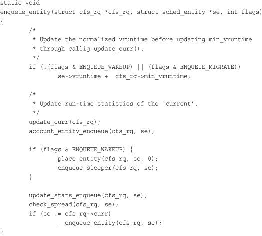
This function updates the runtime and other statistics and then invokes __enqueue_entity() to perform the actual heavy lifting of inserting the entry into the red-black tree:
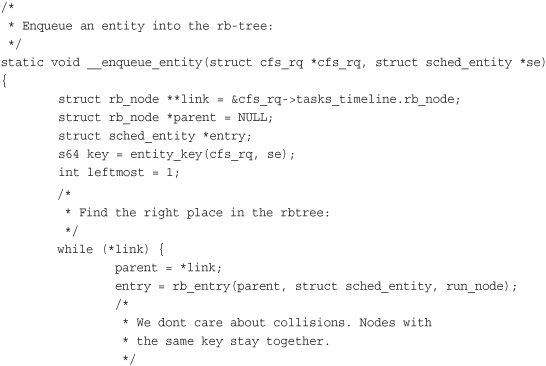
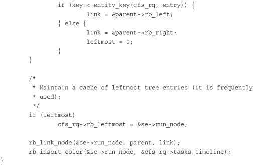
Let’s look at this function. The body of the while() loop traverses the tree in search of a matching key, which is the inserted process’s vruntime. Per the rules of the balanced tree, it moves to the left child if the key is smaller than the current node’s key and to the right child if the key is larger. If it ever moves to the right, even once, it knows the inserted process cannot be the new leftmost node, and it sets leftmost to zero. If it moves only to the left, leftmost remains one, and we have a new leftmost node and can update the cache by setting rb_leftmost to the inserted process. The loop terminates when we compare ourselves to a node that has no child in the direction we move; link is then NULL and the loop terminates. When out of the loop, the function calls rb_link_node() on the parent node, making the inserted process the new child. The function rb_insert_color() updates the self-balancing properties of the tree; we discuss the coloring in Chapter 6.
Finally, let’s look at how CFS removes processes from the red-black tree. This happens when a process blocks (becomes unrunnable) or terminates (ceases to exist):
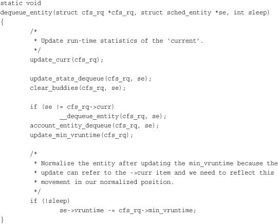
As with adding a process to the red-black tree, the real work is performed by a helper function, __dequeue_entity():
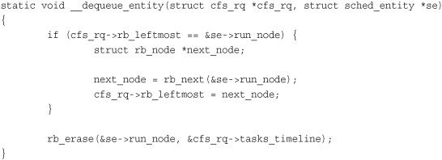
Removing a process from the tree is much simpler because the rbtree implementation provides the rb_erase() function that performs all the work. The rest of this function updates the rb_leftmost cache. If the process-to-remove is the leftmost node, the function invokes rb_next() to find what would be the next node in an in-order traversal. This is what will be the leftmost node when the current leftmost node is removed.
The main entry point into the process schedule is the function schedule(), defined in kernel/sched.c. This is the function that the rest of the kernel uses to invoke the process scheduler, deciding which process to run and then running it. schedule() is generic with respect to scheduler classes. That is, it finds the highest priority scheduler class with a runnable process and asks it what to run next. Given that, it should be no surprise that schedule() is simple. The only important part of the function—which is otherwise too uninteresting to reproduce here—is its invocation of pick_next_task(), also defined in kernel/sched.c. The pick_next_task() function goes through each scheduler class, starting with the highest priority, and selects the highest priority process in the highest priority class:
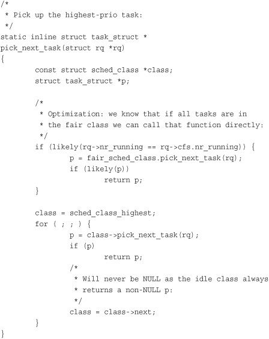
Note the optimization at the beginning of the function. Because CFS is the scheduler class for normal processes, and most systems run mostly normal processes, there is a small hack to quickly select the next CFS-provided process if the number of runnable processes is equal to the number of CFS runnable processes (which suggests that all runnable processes are provided by CFS).
The core of the function is the for() loop, which iterates over each class in priority order, starting with the highest priority class. Each class implements the pick_next_task() function, which returns a pointer to its next runnable process or, if there is not one, NULL. The first class to return a non-NULL value has selected the next runnable process. CFS’s implementation of pick_next_task() calls pick_next_entity(), which in turn calls the __pick_next_entity() function that we discussed in the previous section.
Tasks that are sleeping (blocked) are in a special nonrunnable state. This is important because without this special state, the scheduler would select tasks that did not want to run or, worse, sleeping would have to be implemented as busy looping. A task sleeps for a number of reasons, but always while it is waiting for some event. The event can be a specified amount of time, more data from a file I/O, or another hardware event. A task can also involuntarily go to sleep when it tries to obtain a contended semaphore in the kernel (this is covered in Chapter 9, “An Introduction to Kernel Synchronization”). A common reason to sleep is file I/O—for example, the task issued a read() request on a file, which needs to be read in from disk. As another example, the task could be waiting for keyboard input. Whatever the case, the kernel behavior is the same: The task marks itself as sleeping, puts itself on a wait queue, removes itself from the red-black tree of runnable, and calls schedule() to select a new process to execute. Waking back up is the inverse: The task is set as runnable, removed from the wait queue, and added back to the red-black tree.
As discussed in the previous chapter, two states are associated with sleeping, TASK_INTERRUPTIBLE and TASK_UNINTERRUPTIBLE. They differ only in that tasks in the TASK_UNINTERRUPTIBLE state ignore signals, whereas tasks in the TASK_INTERRUPTIBLE state wake up prematurely and respond to a signal if one is issued. Both types of sleeping tasks sit on a wait queue, waiting for an event to occur, and are not runnable.
Sleeping is handled via wait queues. A wait queue is a simple list of processes waiting for an event to occur. Wait queues are represented in the kernel by wake_queue_head_t. Wait queues are created statically via DECLARE_WAITQUEUE() or dynamically via init_waitqueue_head(). Processes put themselves on a wait queue and mark themselves not runnable. When the event associated with the wait queue occurs, the processes on the queue are awakened. It is important to implement sleeping and waking correctly, to avoid race conditions.
Some simple interfaces for sleeping used to be in wide use. These interfaces, however, have races: It is possible to go to sleep after the condition becomes true. In that case, the task might sleep indefinitely. Therefore, the recommended method for sleeping in the kernel is a bit more complicated:
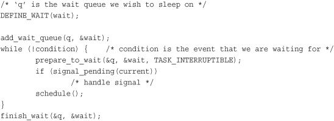
The task performs the following steps to add itself to a wait queue:
DEFINE_WAIT().add_wait_queue(). This wait queue awakens the process when the condition for which it is waiting occurs. Of course, there needs to be code elsewhere that calls wake_up() on the queue when the event actually does occur.prepare_to_wait() to change the process state to either TASK_INTERRUPTIBLE or TASK_UNINTERRUPTIBLE. This function also adds the task back to the wait queue if necessary, which is needed on subsequent iterations of the loop.TASK_INTERRUPTIBLE, a signal wakes the process up. This is called a spurious wake up (a wake-up not caused by the occurrence of the event). So check and handle signals.schedule() and repeats.TASK_RUNNING and removes itself from the wait queue via finish_wait().If the condition occurs before the task goes to sleep, the loop terminates, and the task does not erroneously go to sleep. Note that kernel code often has to perform various other tasks in the body of the loop. For example, it might need to release locks before calling schedule() and reacquire them after or react to other events.
The function inotify_read() in fs/notify/inotify/inotify_user.c, which handles reading from the inotify file descriptor, is a straightforward example of using wait queues:
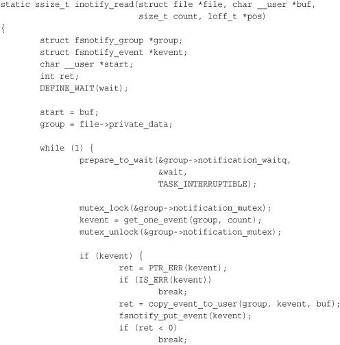
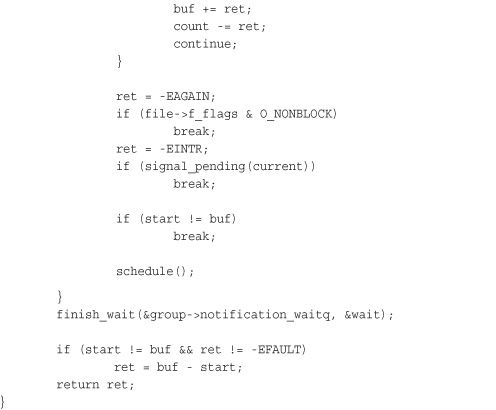
This function follows the pattern laid out in our example. The main difference is that it checks for the condition in the body of the while() loop, instead of in the while() statement itself. This is because checking the condition is complicated and requires grabbing locks. The loop is terminated via break.
Waking is handled via wake_up(), which wakes up all the tasks waiting on the given wait queue. It calls try_to_wake_up(), which sets the task’s state to TASK_RUNNING, calls enqueue_task() to add the task to the red-black tree, and sets need_resched if the awakened task’s priority is higher than the priority of the current task. The code that causes the event to occur typically calls wake_up() itself. For example, when data arrives from the hard disk, the VFS calls wake_up() on the wait queue that holds the processes waiting for the data.
An important note about sleeping is that there are spurious wake-ups. Just because a task is awakened does not mean that the event for which the task is waiting has occurred; sleeping should always be handled in a loop that ensures that the condition for which the task is waiting has indeed occurred. Figure 4.1 depicts the relationship between each scheduler state.
Figure 4.1. Sleeping and waking up.
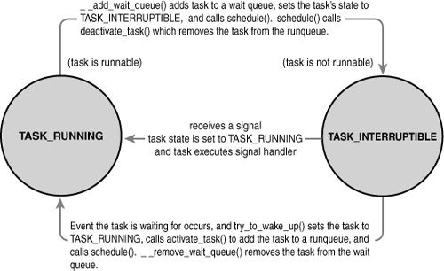
Context switching, the switching from one runnable task to another, is handled by the context_switch()function defined in kernel/sched.c. It is called by schedule() when a new process has been selected to run. It does two basic jobs:
• Calls
switch_mm(), which is declared in<asm/mmu_context.h>, to switch the virtual memory mapping from the previous process’s to that of the new process.
• Calls
switch_to(), declared in<asm/system.h>, to switch the processor state from the previous process’s to the current’s. This involves saving and restoring stack information and the processor registers and any other architecture-specific state that must be managed and restored on a per-process basis.
The kernel, however, must know when to call schedule(). If it called schedule() only when code explicitly did so, user-space programs could run indefinitely. Instead, the kernel provides the need_resched flag to signify whether a reschedule should be performed (see Table 4.1). This flag is set by scheduler_tick() when a process should be preempted, and by try_to_wake_up() when a process that has a higher priority than the currently running process is awakened. The kernel checks the flag, sees that it is set, and calls schedule() to switch to a new process. The flag is a message to the kernel that the scheduler should be invoked as soon as possible because another process deserves to run.
Table 4.1. Functions for Accessing and Manipulating need_resched
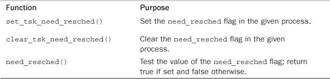
Upon returning to user-space or returning from an interrupt, the need_resched flag is checked. If it is set, the kernel invokes the scheduler before continuing.
The flag is per-process, and not simply global, because it is faster to access a value in the process descriptor (because of the speed of current and high probability of it being cache hot) than a global variable. Historically, the flag was global before the 2.2 kernel. In 2.2 and 2.4, the flag was an int inside the task_struct. In 2.6, it was moved into a single bit of a special flag variable inside the thread_info structure.
User preemption occurs when the kernel is about to return to user-space, need_resched is set, and therefore, the scheduler is invoked. If the kernel is returning to user-space, it knows it is in a safe quiescent state. In other words, if it is safe to continue executing the current task, it is also safe to pick a new task to execute. Consequently, whenever the kernel is preparing to return to user-space either on return from an interrupt or after a system call, the value of need_resched is checked. If it is set, the scheduler is invoked to select a new (more fit) process to execute. Both the return paths for return from interrupt and return from system call are architecture-dependent and typically implemented in assembly in entry.S (which, aside from kernel entry code, also contains kernel exit code).
In short, user preemption can occur
• When returning to user-space from a system call
• When returning to user-space from an interrupt handler
The Linux kernel, unlike most other Unix variants and many other operating systems, is a fully preemptive kernel. In nonpreemptive kernels, kernel code runs until completion. That is, the scheduler cannot reschedule a task while it is in the kernel—kernel code is scheduled cooperatively, not preemptively. Kernel code runs until it finishes (returns to user-space) or explicitly blocks. In the 2.6 kernel, however, the Linux kernel became preemptive: It is now possible to preempt a task at any point, so long as the kernel is in a state in which it is safe to reschedule.
So when is it safe to reschedule? The kernel can preempt a task running in the kernel so long as it does not hold a lock. That is, locks are used as markers of regions of nonpreemptibility. Because the kernel is SMP-safe, if a lock is not held, the current code is reentrant and capable of being preempted.
The first change in supporting kernel preemption was the addition of a preemption counter, preempt_count, to each process’s thread_info. This counter begins at zero and increments once for each lock that is acquired and decrements once for each lock that is released. When the counter is zero, the kernel is preemptible. Upon return from interrupt, if returning to kernel-space, the kernel checks the values of need_resched and preempt_count. If need_resched is set and preempt_count is zero, then a more important task is runnable, and it is safe to preempt. Thus, the scheduler is invoked. If preempt_count is nonzero, a lock is held, and it is unsafe to reschedule. In that case, the interrupt returns as usual to the currently executing task. When all the locks that the current task is holding are released, preempt_count returns to zero. At that time, the unlock code checks whether need_resched is set. If so, the scheduler is invoked. Enabling and disabling kernel preemption is sometimes required in kernel code and is discussed in Chapter 9.
Kernel preemption can also occur explicitly, when a task in the kernel blocks or explicitly calls schedule(). This form of kernel preemption has always been supported because no additional logic is required to ensure that the kernel is in a state that is safe to preempt. It is assumed that the code that explicitly calls schedule() knows it is safe to reschedule.
Kernel preemption can occur
• When an interrupt handler exits, before returning to kernel-space
• When kernel code becomes preemptible again
• If a task in the kernel explicitly calls
schedule()
• If a task in the kernel blocks (which results in a call to
schedule())
Linux provides two real-time scheduling policies, SCHED_FIFO and SCHED_RR. The normal, not real-time scheduling policy is SCHED_NORMAL. Via the scheduling classes framework, these real-time policies are managed not by the Completely Fair Scheduler, but by a special real-time scheduler, defined in kernel/sched_rt.c. The rest of this section discusses the real-time scheduling policies and algorithm.
SCHED_FIFO implements a simple first-in, first-out scheduling algorithm without timeslices. A runnable SCHED_FIFO task is always scheduled over any SCHED_NORMAL tasks. When a SCHED_FIFO task becomes runnable, it continues to run until it blocks or explicitly yields the processor; it has no timeslice and can run indefinitely. Only a higher priority SCHED_FIFO or SCHED_RR task can preempt a SCHED_FIFO task. Two or more SCHED_FIFO tasks at the same priority run round-robin, but again only yielding the processor when they explicitly choose to do so. If a SCHED_FIFO task is runnable, all tasks at a lower priority cannot run until it becomes unrunnable.
SCHED_RR is identical to SCHED_FIFO except that each process can run only until it exhausts a predetermined timeslice. That is, SCHED_RR is SCHED_FIFO with timeslices—it is a real-time, round-robin scheduling algorithm. When a SCHED_RR task exhausts its timeslice, any other real-time processes at its priority are scheduled round-robin. The timeslice is used to allow only rescheduling of same-priority processes. As with SCHED_FIFO, a higher-priority process always immediately preempts a lower-priority one, and a lower-priority process can never preempt a SCHED_RR task, even if its timeslice is exhausted.
Both real-time scheduling policies implement static priorities. The kernel does not calculate dynamic priority values for real-time tasks. This ensures that a real-time process at a given priority always preempts a process at a lower priority.
The real-time scheduling policies in Linux provide soft real-time behavior. Soft real-time refers to the notion that the kernel tries to schedule applications within timing deadlines, but the kernel does not promise to always achieve these goals. Conversely, hard real-time systems are guaranteed to meet any scheduling requirements within certain limits. Linux makes no guarantees on the capability to schedule real-time tasks. Despite not having a design that guarantees hard real-time behavior, the real-time scheduling performance in Linux is quite good. The 2.6 Linux kernel is capable of meeting stringent timing requirements.
Real-time priorities range inclusively from zero to MAX_RT_PRIO minus 1. By default, MAX_RT_PRIO is 100—therefore, the default real-time priority range is zero to 99. This priority space is shared with the nice values of SCHED_NORMAL tasks: They use the space from MAX_RT_PRIO to (MAX_RT_PRIO + 40). By default, this means the –20 to +19 nice range maps directly onto the priority space from 100 to 139.
Linux provides a family of system calls for the management of scheduler parameters. These system calls allow manipulation of process priority, scheduling policy, and processor affinity, as well as provide an explicit mechanism to yield the processor to other tasks.
Various books—and your friendly system man pages—provide reference to these system calls (which are all implemented in the C library without much wrapper—they just invoke the system call). Table 4.2 lists the system calls and provides a brief description. How system calls are implemented in the kernel is discussed in Chapter 5, “System Calls.”
Table 4.2. Scheduler-Related System Calls
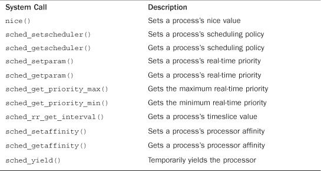
The sched_setscheduler() and sched_getscheduler() system calls set and get a given process’s scheduling policy and real-time priority, respectively. Their implementation, like most system calls, involves a lot of argument checking, setup, and cleanup. The important work, however, is merely to read or write the policy and rt_priority values in the process’s task_struct.
The sched_setparam() and sched_getparam() system calls set and get a process’s real-time priority. These calls merely encode rt_priority in a special sched_param structure. The calls sched_get_priority_max() and sched_get_priority_min() return the maximum and minimum priorities, respectively, for a given scheduling policy. The maximum priority for the real-time policies is MAX_USER_RT_PRIO minus one; the minimum is one.
For normal tasks, the nice()function increments the given process’s static priority by the given amount. Only root can provide a negative value, thereby lowering the nice value and increasing the priority. The nice() function calls the kernel’s set_user_nice() function, which sets the static_prio and prio values in the task’s task_struct as appropriate.
The Linux scheduler enforces hard processor affinity. That is, although it tries to provide soft or natural affinity by attempting to keep processes on the same processor, the scheduler also enables a user to say, “This task must remain on this subset of the available processors no matter what.” This hard affinity is stored as a bitmask in the task’s task_struct as cpus_allowed. The bitmask contains one bit per possible processor on the system. By default, all bits are set and, therefore, a process is potentially runnable on any processor. The user, however, via sched_setaffinity(), can provide a different bitmask of any combination of one or more bits. Likewise, the call sched_getaffinity() returns the current cpus_allowed bitmask.
The kernel enforces hard affinity in a simple manner. First, when a process is initially created, it inherits its parent’s affinity mask. Because the parent is running on an allowed processor, the child thus runs on an allowed processor. Second, when a processor’s affinity is changed, the kernel uses the migration threads to push the task onto a legal processor. Finally, the load balancer pulls tasks to only an allowed processor. Therefore, a process only ever runs on a processor whose bit is set in the cpus_allowed field of its process descriptor.
Linux provides the sched_yield() system call as a mechanism for a process to explicitly yield the processor to other waiting processes. It works by removing the process from the active array (where it currently is, because it is running) and inserting it into the expired array. This has the effect of not only preempting the process and putting it at the end of its priority list, but also putting it on the expired list—guaranteeing it will not run for a while. Because real-time tasks never expire, they are a special case. Therefore, they are merely moved to the end of their priority list (and not inserted into the expired array). In earlier versions of Linux, the semantics of the sched_yield()call were quite different; at best, the task was moved only to the end of its priority list. The yielding was often not for a long time. Nowadays, applications and even kernel code should be certain they truly want to give up the processor before calling sched_yield().
Kernel code, as a convenience, can call yield(), which ensures that the task’s state is TASK_RUNNING and then call sched_yield(). User-space applications use the sched_yield()system call.
The process scheduler is an important part of any kernel because running processes is (for most of us, at least) the point of using the computer in the first place. Juggling the demands of process scheduling is nontrivial, however: A large number of runnable processes, scalability concerns, trade-offs between latency and throughput, and the demands of various workloads make a one-size-fits-all algorithm hard to achieve. The Linux kernel’s new CFS process scheduler, however, comes close to appeasing all parties and providing an optimal solution for most use cases with good scalability through a novel, interesting approach.
The previous chapter covered process management. This chapter ruminated on the theory behind process scheduling and the specific implementation, algorithms, and interfaces used by the current Linux kernel. The next chapter covers the primary interface that the kernel provides to running processes: system calls.